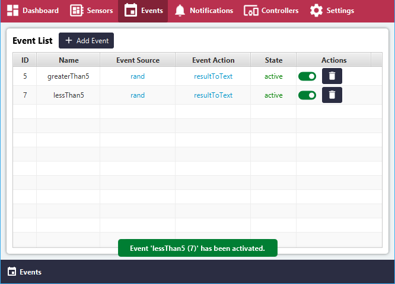
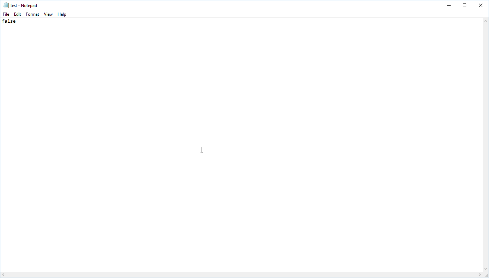

Generated random values on Windows and Local Events¶
In this tutorial an Input Sensor Attribute will be created, which instead of reading from an actual Sensor, will generate its own random value between 0 and 9.
The Output Sensor Attribute will have the purpose of writing a value into a local .txt file. These values provided to the Output Sensor Attribute will be by rules that are defined in so called 'Events'.
The following situation should be handled:
-
If the value from the Input Attribute is above 5, set the Output Attribute to 'True'. (It will write the value 'True' into the .txt file)
-
If the value from the Input Attribute is below 5, set the Output Attribute to 'False'. (It will write the value 'True' into the .txt file)
Great, let's get started!
Open the 'Sensors' view.¶
Add a new Sensor with the name 'RandomValue' and Type 'Random' or similar.¶

Click 'Add' to save the new Sensor Group.¶
Click 'Configure'.¶
No attributes have been configured yet.¶
Create a new Attribute. Fill in the values:¶
- Name: rand
- Type: integer
- Direction: input (from sensor to device)
- Interval: 5 sec
The attribute has been created successfully.¶
Click the '< >' button to configure the Sensor Attribute Script.¶
To start editing, click the 'Edit' button.¶
Edit mode will appear and the script may be added manually or from a template.¶
Select the template 'randomGenerator (Test)'.¶
The script will be added to the script body.¶
Click 'Validate' to validate the script.¶
After successful validation, click 'Save' to save the changes. Then click 'Back to Attribute List'.¶
In the overview, the Script State will now show as 'valid'.¶
Toggle the button in the Action area to activate the Sensor Attribute.¶
The collection of data will start at this point.¶
The Attribute State has now changed to active.¶
In the 'Add Attribute' section, create a new Attribute with the following details:¶
- Name: resultToText
- Type: boolean
- Direction: output (from device to sensor)
- Interval: Event-driven (cannot be changed for output direction)
Click the 'Add' to save the new attribute.¶
In the overview, click the '< >'(Script) button.¶
In the bottom left corner, click 'Edit' to enable editing of the script.¶
The script can now be edited, as the 'Validate' button has appeared.¶
Enter the following detail:¶
- Input Parameter: True
From the 'Templates' dropdown in the top-right corner, select the 'writeToFile (Test)' template.¶
Click the 'Validate' button.¶
Save the changes by clicking the 'Save' button and then click 'Back to Attribute List' to return to the overview.¶
The script state for the attribute 'resultToText' is now valid.¶
Click on the switch to activate the 'resultToText' attribute.¶
Great, both Attributes are now valid and active!¶
In the Menu, click 'Events'.¶
Then, click the 'Add Events' button.¶
For this scenario, we will need to eventually create two events. The first Event will handle the situation if the random generated number by the input Attribute is above 5, then save the value 'true' to the test.txt file.¶
Let's fill out the details for the first event scenario as follows:¶
Event Source¶
- Sensor: RandomValue (Random)
- Attribute: rand (integer)
- Attribute Average: Real-Time
- Event Condition: greater than
- Event Value: 5
Event Action¶
- Sensor: RandomValue (Random)
- Attribute: resultToText
- Event Trigger Value: True
Event Parameters¶
- Name: greaterThan5
Finally, click the 'Add' button to save the event.¶
In the Event List overview, click 'Add Event' to create the second event.¶
This second will handle the situation if the random generated number by the input Attribute is below 5, then save the value 'false' to the test.txt file.¶
Let's fill out the details for the first event scenario as follows:¶
Event Source¶
- Sensor: RandomValue (Random)
- Attribute: rand (integer)
- Attribute Average: Real-Time
- Event Condition: less than
- Event Value: 5
Event Action¶
- Sensor: RandomValue (Random)
- Attribute: resultToText
- Event Trigger Value: False
Event Parameters¶
- Name: lessThan5
Finally, click the 'Add' button to save the event.¶
Both Events are now created and will be listed in the overview.¶
Activate both Events by clicking on the switches.¶

Now that the Events are active, the Edge Client will start writing the results of the evaluations from the Input Attribute to the Output Attribute. In this case, if the value from the input attribute is greater than 5, write the value 'True' in the test.txt file, if it is below 5, overwrite the value with the value 'False'.¶
Let us check the current value of the Input Attribute.¶
Click 'Sensors' in the Menu, then for the input Attribute, click the 'Overview' button. The Input Attribute will be shown with its latest value.¶
Use the refresh button in the top-right corner to check the latest value.¶
Remember, the value is always updated after every 5 seconds.¶
In File Explorer on Windows, navigate to the folder with the downloaded files for HyperConnect and locate the 'test.txt' file.¶
Open 'test.txt' in Notepad or similar program.¶
Because the read value was 2, which is less than 5, the second event was fulfilled successfully and the value 'false' was written in the test.txt file.¶

Back to the overview, click the 'Refresh' button in the top-right corner to see the new value read from the input attribute.¶
The value was 6, so the first event must have been fulfilled.¶
Correctly, if you re-open the test.txt file, the value was set to 'true'.¶
Connect a Remote Controller¶
Note: To install a Remote Controller on a mobile phone, please follow the instructions here:¶
Note: To connect the Remote Controller with the Edge Client, please follow the instruction:¶
On the Edge Client, make sure the connection is 'Active'.¶
On the Remote Controller, make sure the device is 'Online'.¶
On the Remote Controller, click the 'Sensors' button.¶
The sensor data from the Edge Client will be automatically displayed on the sensor overview.¶
On the Remote Controller, click the 'History' button to see the graph of readings.¶
The graph of readings will be displayed and updates automatically.¶
Awesome, you did it! This is a good example of how data input streams can be monitored automatically and that the rules can be predefined for any outcome.¶
Did you notice the that Input Attribute when it was exactly 5 was not handled in this tutorial?¶
Give it a try and create a third event which sets the boolean value 'true' when the Input Attribute is 'equal to' 5.¶
Note: 'greater than or equal' and 'less than or equal' options are not available by default to avoid any overlapping in the Rules Engine.